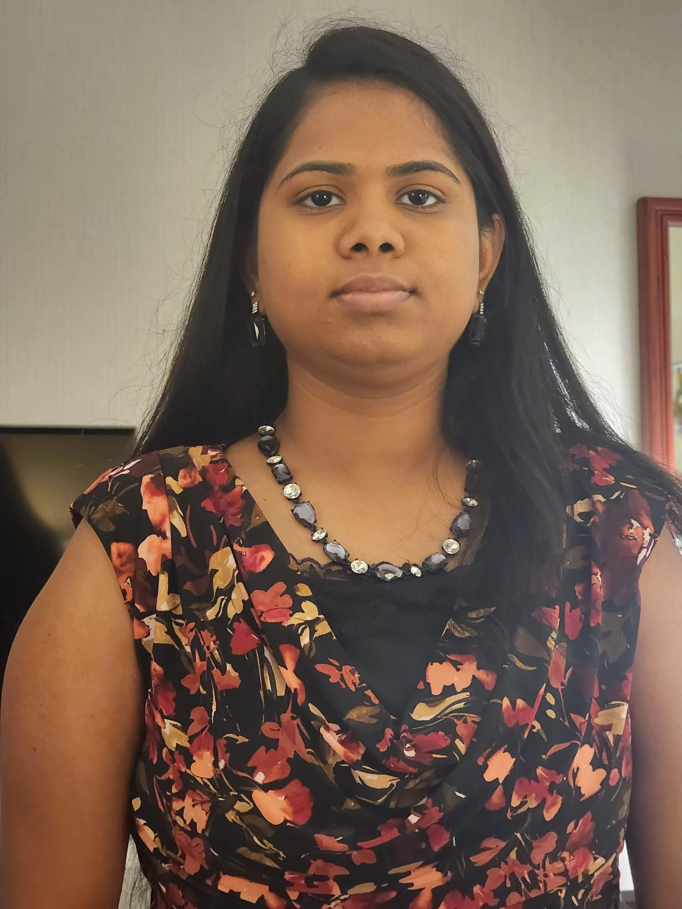

Deepika Karunakaran
ITEC Student | Innovator | Enthusiastic problem solver

My Student Life..
Welcome to my portfolio! My name is Deepika karunakaranand I am currently pursuing a bachelor’s degree in BA ITEC at York University.
I live in Oshawa, Canada for more than two years.
I am passionate about Programming.
Throughout my academic journey, I have maintained a strong focus on programming. I have actively sought out opportunities to expand my knowledge and skills through various coursework and research projects.
One area of particular interest to me is Coding. I have dedicated myself to exploring this field in depth, delving into topics such as Creating a website, doing different projects. This academic pursuit has not only deepened my understanding but has also ignited my curiosity to further explore its applications in real-world scenarios.
In addition to my academic achievements, I have gained practical experience through assignments and project. For instance, I had the opportunity to intern at Motion specialties, where I collaborated with a team to design the website. This experience allowed me to apply the knowledge gained in the classroom and provided valuable knowledge.
Areas of Expertise
- Designed web pages using HTML, JavaScript, CSS, jQuery and page design and layout and graphics.
- Implemented new projects builds framework by using Jenkins as build framework tool.
- Hand-on knowledge of as source code management tool like Git
- Supported IT manager with department administrative duties, including solving connection issues.
- Set up and configured system user hardware and software applications.
- Kept software patched and licenses up to date.
- Maintained company filtering protocols and network security settings.
- Assessed performance of equipment and network infrastructure and made proactive improvements in line with company standards.
- Kept customers informed about issue resolution progress and provided updated estimated times of resolution on ongoing basis.
- Tested performance, functionality and security of network systems, individual workstations and peripheral devices.
- Monitored completed work and provided feedback to improve team member performance.
- Maintain student record and database
- Generated performance reports to outline quality management effectiveness and achieve goals.
Technical Skills
- Programming Languages: Java, HTML, Css, C+ and Php
- Tools: Eclipse, IntelliJ IDEA, Git hub
- Data Base: Mysql
- Microsoft Office (Word, Excel, PowerPoint), Adobe Captivate, Adobe Audition
- DevOps Tools
Git, Jenkins, Docker, Kubernetes, Ansible
- AWS : EC2, S3, IAM, CloudWatch, Elastic search, Elastic beanstalk, Lambda
- Virtual Technology: VMware
- Operating Systems: Windows, Linux, Ubuntu, CentOS
- Version control tools Git, GitHub & Bitbucket
- SDLC: Agile and Waterfall
- Networks : TCP/IP, Routing, Network troubleshooting, SSH, DNS, DHCP
Soft Skills
Good Team Work | Collaboration | Adaptability | Negotiation Effective Communication | Trust-building | Problem-solving | Conflict-Management | Project Planning | Organization
My Hobbies
In my spare time, I enjoy Writing Blogs,Cooking my favorite cuisines.
I also enjoy listening to music, playing badminton, travelling with my husband, and spending time with family in Oshawa.
My Blog Link
Get in Touch with me